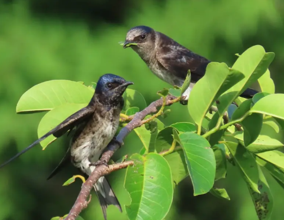
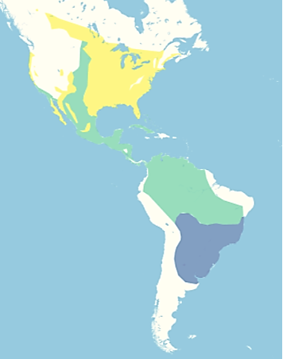

Hirondelles norie (Progne subis)

Hirondelles norie – Susan Young1
Description: Il s'agit de la plus grande hirondelle d'Amérique du Nord, mesurant de 18 à 23 cm de long et pesant de 42 à 56 grammes. Elle possède un bec court légèrement crochu, une large poitrine, une queue fourchue et de longues ailes effilées. Le plumage du mâle adulte est d'un bleu noirâtre foncé avec des reflets irisés, lui donnant une apparence pourpre intense. Le plumage de la femelle et des juvéniles est d'un bleu et gris plus terne.
Migration et Habitat: Les hirondelles bicolores préfèrent les grands espaces ouverts près de l'eau, avec des perchoirs adéquats pour se nourrir. Elles établissent également des colonies aux endroits où des nichoirs sont installés, comme dans la vallée de la Willamette. Pendant la saison de reproduction, elles vivent le long de la côte Pacifique et dans tout l'est de l'Amérique du Nord. Elles migrent sur de longues distances et passent l'hiver en Amérique du Sud.

Carte de la gamme: BirdLife International (2025) Légende : Vert : Résident Jaune : Reproduction Bleu : Passage 2
Reproduction: Ils préfèrent nicher en groupe et construisent leurs nids dans des cavités abritées que l'on trouve dans des arbres, des falaises, des cactus, des calebasses ou des nichoirs. Leur nid, légèrement plat, est composé de brindilles, de tiges de plantes, d'herbe et de boue, puis tapissé de feuilles vertes fraîches. Ils produisent une couvée de 3 à 6 œufs par an et retournent au même site de nidification si la saison de reproduction a été fructueuse.
Diet: Les hirondelles bicolores sont des insectivores aériens qui consomment une grande variété d'insectes capturés en vol. Elles préfèrent les insectes volants de grande taille, comme les libellules, les mouches et les papillons de nuit. Leur régime alimentaire assure une lutte antiparasitaire naturelle dans les zones agricoles et urbaines.
Conservation Status: Leur statut mondial est « Préoccupation mineure », mais l'Oregon et Washington les considèrent comme une préoccupation régionale en raison de leur habitat de reproduction limité.
Prepared by Vickie Stiteler
Credits:
1Titre: Hirondelles norie Credit: Susan Young
Source:
https://www.fws.gov/media/purple-martins
Droits : Domaine public
2Carte de la gamme: BirdLife International (2025). Species factsheet: Purple Martin Progne subis.
Source : Consulté le 20/09/2026
https://datazone.birdlife.org/species/factsheet/purple-martin-progne-subis